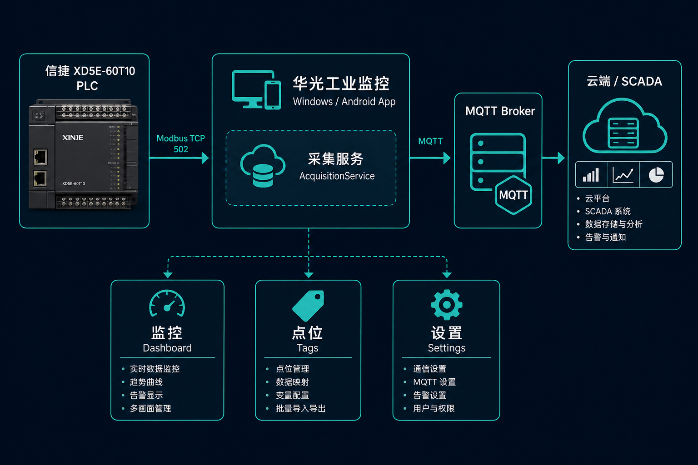
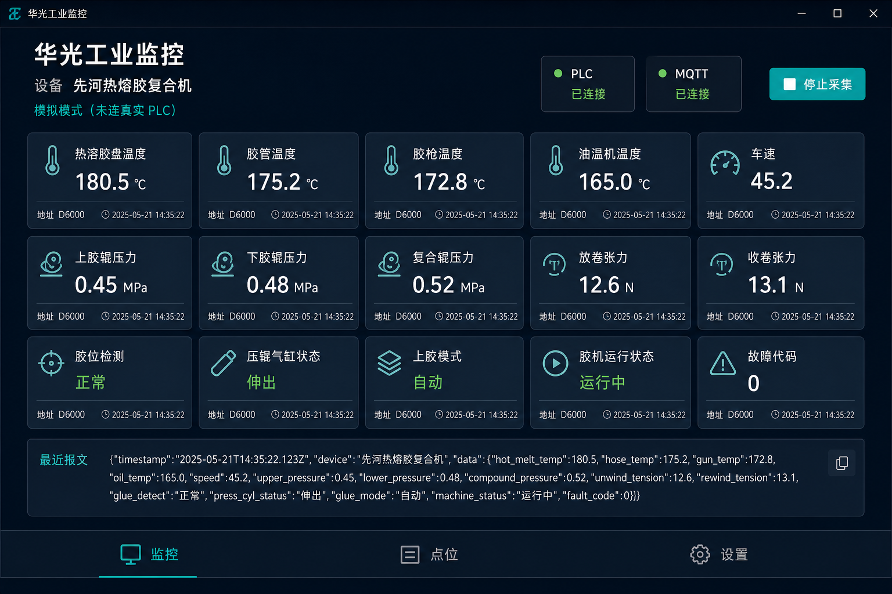
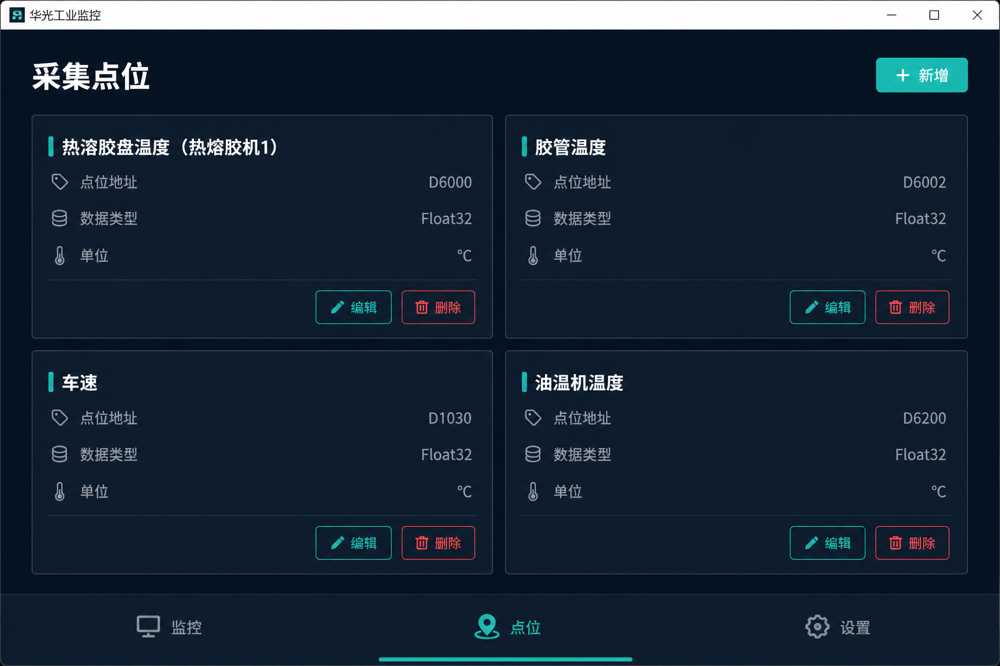
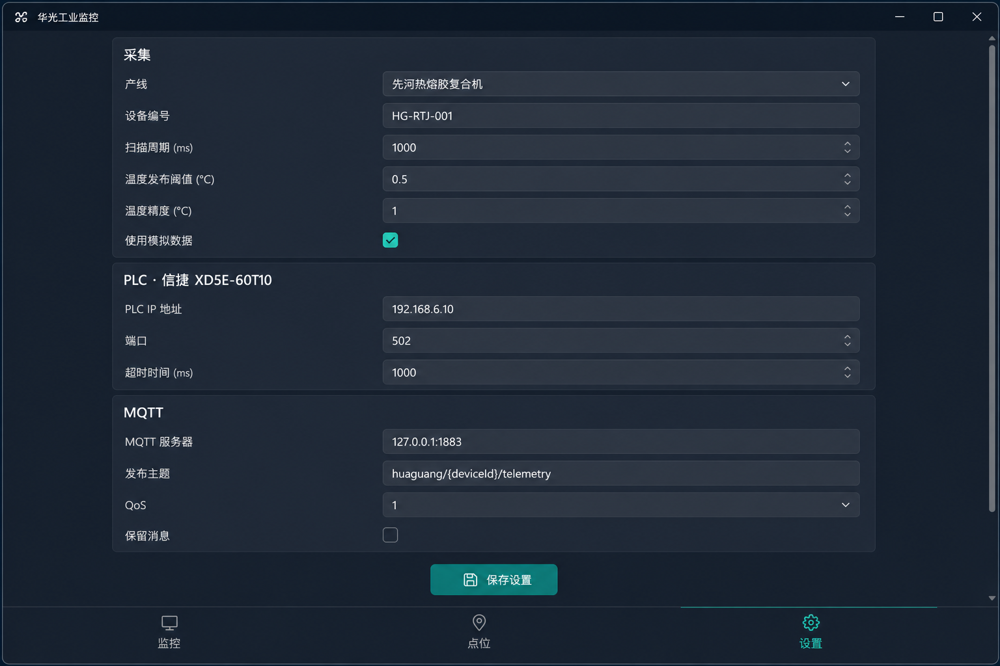

版本 1.1.3（修订 3）
版本 1.1.3 · 修订 3 · 平台：Windows 10/11 工控机、Android 11 工业平板
技术栈：.NET 10 MAUI · 信捷 XD5E-60T10 · Modbus TCP · MQTT
PDF 版：[DESIGN.pdf](DESIGN.pdf)（运行 python ../scripts/export-design-pdf.py 重新生成）
工业监控 是一套面向热熔胶复合产线的现场采集终端。支持两种运行方式：
| 项目 | 说明 |
|---|---|
| 应用名称 | 工业监控 |
| 版本号 | 1.1.3（ApplicationDisplayVersion） |
| 修订号 | 3（ApplicationVersion，Android versionCode） |
| 包名 / ID | com.industrial.monitor |
| 默认产线 | 先河热熔胶复合机（192.168.6.10） |
| 可选产线 | 华迪热熔胶复合机（192.168.6.20） |
| PLC 型号 | 信捷 XD5E-60T10，Modbus TCP 502 |

┌─────────────┐ Modbus TCP ┌──────────────────┐ MQTT JSON ┌─────────────┐
│ XD5E-60T10 │ ────────────────► │ 工业监控 App │ ──────────────► │ MQTT Broker │
│ PLC :502 │ 周期轮询 │ (Win / Android) │ 按阈值发布 │ / 云端 │
└─────────────┘ └──────────────────┘ └─────────────┘
│
┌────────────────────┼────────────────────┐
▼ ▼ ▼
DashboardPage TagsPage HistoryPage
实时监控 点位管理 历史数据
│ │ │
└────────────────────┼────────────────────┘
▼
SettingsPage / DiagnosticsPage
参数配置 软件自检| 模块 | 职责 |
|---|---|
AcquisitionService |
采集模式：轮询 PLC、模拟数据、阈值判断、MQTT 发布 |
SubscriptionService |
订阅模式：连接 Broker、多主题订阅、解析遥测 JSON |
SubscribeTopicHelper / MqttTopicMatcher |
主题列表规范化、MQTT 通配符匹配 |
ModbusTcpPlcClient |
信捷地址映射与 Modbus 读寄存器 |
MqttPublisher / MqttConnectionFactory |
MQTT 连接与 JSON 报文发布 |
SettingsStore |
本地 settings.json 持久化（优先于 Excel 覆盖） |
LineExcelConfigService |
产线 Excel 导入/导出（配置、点表、字段映射、显示分组） |
HistoryStore |
本地 SQLite 历史快照存储、查询、删除与保留期清理 |
LineCatalog |
产线数据地址规划点表 |
WindowsStartupRegistration |
Windows 开机自启注册表项 |
MonitorCoreTests |
核心逻辑单元测试（诊断页可触发） |
+ / #）主题::deviceId 区分设备并缓存深色工业风，高对比度数值、低干扰背景，适配工控机长时间运行。
| 用途 | 色值 | 说明 |
|---|---|---|
| 页面背景 | #0B1522 |
主背景 |
| 卡片背景 | #152536 |
点位卡片、状态块 |
| 卡片边框 | #1F3A52 |
1 px 描边 |
| Tab 栏背景 | #101C28 |
底部导航 |
| 主强调色 | #2EC4B6 |
数值、选中 Tab、按钮 |
| 主文字 | #FFFFFF |
标题 |
| 次级文字 | #8AA0B5 |
标签、说明 |
| 数值辅助 | #C9D6E2 |
报文、点名 |
| 成功 / 已连接 | #3DDC97 |
状态点 |
| 警告 | #FFB347 |
未发布提示 |
| 错误 | #FF6B6B |
异常信息 |
| 删除按钮 | #5A2430 |
危险操作 |
| 元素 | 规格 |
|---|---|
| 页面标题 | 20 pt，Bold，White |
| 区块标题 | 18 pt，Bold |
| 实时数值 | 22 pt，Bold，#2EC4B6 |
| 卡片圆角 | 8 px |
| 状态点 | 7–8 px 圆形 |
底部 TabBar 五页，无顶部 Shell 标题栏（Shell.NavBarIsVisible=False），内容区自带标题。
| Tab | 路由 | 功能 |
|---|---|---|
| 监控 | dashboard |
实时数据、启停采集/订阅、连接状态、订阅主题筛选 |
| 点位 | tags |
按显示分组浏览点位，增删改、手动值、显示精度 |
| 历史 | history |
本地 SQLite 历史记录表格查询、删除、分页加载 |
| 设置 | settings |
运行模式、产线 Excel、PLC、MQTT、阈值与精度、历史开关 |
| 诊断 | diagnostics |
软件自检，运行核心单元测试 |

布局（上 → 下）
| 区域 | 内容 |
|---|---|
| 顶栏 | 应用名、设备 ID、运行模式；PLC / MQTT 状态卡片；启动/停止 按钮。竖屏为三行（标题 → 按钮 → 状态），按钮区可横向滚动；横屏保持单行三列 |
| 订阅区 | （订阅模式）主题筛选 Picker、「全部」+ 各配置主题；添加主题输入框与按钮 |
| 设备选择 | （订阅模式且有数据）远程设备 Picker；「全部」视图下显示 设备ID (主题) |
| 信息条 | 发布/订阅主题摘要；橙色状态提示；红色错误信息 |
| 主区域 | 按 显示分组 分块，自适应网格卡片展示各点位实时值、单位、地址/来源主题、质量、更新时间 |
| 底栏 | 最近 MQTT 报文摘要（单行截断） |
状态指示
交互

布局
| 区域 | 内容 |
|---|---|
| 顶栏 | 标题「采集点位」、产线摘要 + 新增 按钮 |
| 说明 | 分组与颜色同产线 Excel「点表·显示分组」；MQTT 字段见「字段映射」表 |
| 主区域 | 虚拟化分组列表（CollectionView），每组标题带颜色条与数量；卡片含名称、分组、地址、来源、MQTT 字段、启用状态 |
| 卡片操作 | 编辑 / 删除（删除为红色按钮） |
进入页面时若数据未变则不重复加载；编辑/删除后强制刷新。
点位编辑页（从本页跳入）
D100、M0、X20（八进制）、Y0产线切换或从 Excel 载入时在「设置」页操作；已保存的 settings.json 优先，Excel 仅在首次安装或点表为空时自动覆盖。
布局
| 区域 | 内容 |
|---|---|
| 顶栏 | 标题「历史数据」、摘要（共 N 条 / 已加载 M 条） |
| 筛选 | 时间范围（24 小时 / 7 天 / 30 天）、设备 Picker |
| 操作 | 刷新、删除筛选、清空全部 |
| 表头 | 等宽 Consolas 列名行（时间、设备、各点位） |
| 主区域 | 虚拟化列表，每行一条快照 + 删 按钮 |
| 底栏 | 加载更多 按钮、加载指示、状态消息 |
交互
须在「设置 → 历史数据」中开启记录；关闭后历史页提示在设置中开启。

分组字段
| 字段 | 说明 |
|---|---|
| 运行模式 | 采集模式（读 PLC 发 MQTT）或 订阅模式（看远程遥测） |
| 订阅主题 | 订阅模式下可配置 多个 主题，支持 + / #；至少保留一个 |
| 产线（Excel） | 先河 / 华迪；每条产线一个 xlsx，含配置、MQTT 报文、字段映射、点表、显示分组说明 |
| Excel 操作 | 从 Excel 载入、保存到 Excel、从其他文件导入；路径见 config/lines/ 或用户 lines/ |
| 设备编号 | MQTT {deviceId} 替换用（采集模式） |
| 扫描周期 | 200–60000 ms，默认 60000 ms（60 s） |
| 温度发布阈值 | 0 = 每次都发；>0 = 任一温度变化达该 ℃ 才发 |
| 温度精度 | 0–4 位小数，全局默认；各点位可单独覆盖 |
| 使用模拟数据 | 无 PLC 时生成波形数据，可验证 MQTT |
| 开机自动启动 | Windows 登录后运行本程序（需平台支持） |
| 启动后自动运行 | 打开程序后自动开始采集或订阅 |
| 字段 | 说明 |
|---|---|
| 记录开关 | 采集/订阅快照写入本地 SQLite |
| 保留天数 | 1–365，默认 14；启动时清理过期记录 |
| 字段 | 默认 |
|---|---|
| IP | 192.168.6.10 / 192.168.6.20 |
| 端口 | 502 |
| 站号 | 1 |
| 超时 | 2000 ms |
| 字段 | 默认 |
|---|---|
| Broker | 127.0.0.1:1883 |
| ClientId | 可空，自动生成 |
| 用户名 / 密码 | 可选 |
| TLS | 可选 |
| 主题 | monitor/{deviceId}/telemetry |
| QoS | 0 |
保存设置时写回 settings.json 并同步 Excel（采集模式）。停止采集/订阅后再改 PLC/MQTT 或导入 Excel（首页运行中添加订阅主题除外）。
| 区域 | 内容 |
|---|---|
| 顶栏 | 标题「软件自检」、版本号与修订号、状态与摘要 |
| 操作 | 核心测试（Modbus 地址、MQTT 匹配、Excel 读写、历史存储等单元测试） |
| 结果 | 逐条 PASS/FAIL 列表 |
{
"deviceId": "先河热熔胶复合机",
"timestamp": "2026-08-19T05:30:00Z",
"simulator": false,
"plcHost": "192.168.6.10",
"quality": "Good",
"tags": {
"热溶胶盘温度（热熔胶机1）": 180.5,
"胶管温度（热熔胶机1）": 175.2,
"车速": 45.2
}
}| 字段 | 说明 |
|---|---|
quality |
Good 全部成功；Uncertain 部分点位失败 |
tags |
键为点位名称，温度为精度处理后数值 |
来源：产线数据地址规划 — 仅「机台获取」REAL 点位。
| 名称 | 地址 | 单位 |
|---|---|---|
| 运行状态 | D1000 | 开/关（Bool，0/1 启动指示灯） |
| 热溶胶盘温度（热熔胶机1） | D6000 | ℃ |
| 胶管温度（热熔胶机1） | D6002 | ℃ |
| 油温机温度 | D6200 | ℃ |
| 车速 | D1030 | — |
| 卷曲张力 | D1090 | — |
手动输入（不读 PLC，在点位页编辑手动值后随 MQTT 发布）：
| 名称 | 类型 | 单位 |
|---|---|---|
| 胶辊型号 | 文本 | — |
| 胶水型号 | 文本 | — |
| 门幅 | 浮点 | mm |
| 厚度 | 浮点 | mm |
华迪产线无「上展开转速率」。
| 场景 | 方式 |
|---|---|
| 开发调试 | Visual Studio F5，net10.0-windows10.0.19041.0 |
| 生成安装包 | VS Release 发布（自动）或 build-installer.bat → installer/output/IndustrialMonitor-Setup.exe |
| 现场工控机 | 双击安装包，向导安装到 Program Files |
| 无 PLC 联调 | 勾选模拟数据 + 本地 Mosquitto（start-test-mqtt.ps1） |
安装包（推荐）
IndustrialMonitor-Setup.exe开机自动启动
运行环境
huaGuang/
├── config/lines/ ← 随程序分发的默认产线 Excel
├── installer/
│ ├── IndustrialMonitor.iss ← Inno Setup 脚本
│ └── output/ ← 生成的 IndustrialMonitor-Setup.exe
├── docs/
│ ├── DESIGN.md ← 本设计手册
│ ├── CHANGELOG.md ← 版本更新日志
│ └── images/ ← 界面与架构图
├── src/HuaGuang.Monitor/ ← MAUI 主工程
├── src/HuaGuang.Monitor.Core/ ← 核心逻辑（Modbus、MQTT、历史、Excel）
├── scripts/ ← 编译、发布、测试脚本
└── test/ ← MQTT 与示例配置| 版本 | 日期 | 说明 |
|---|---|---|
| 1.1.3 | 2026-08-22 | 历史表格与删除、手动刷新与分页加载；点位虚拟化；设置持久化；监控页竖横屏布局 |
| 1.1.2 | 2026-08-21 | 产线 Excel 配置、SQLite 历史记录、MQTT 扩展连接参数 |
| 1.1.1 | 2026-08-20 | 诊断 Tab 与核心自检；桌面/订阅 UI 与内存优化 |
| 1.1 | 2026-08-20 | 订阅模式与多主题切换、Windows Inno 安装包、开机自启、点位显示精度、默认手动标签 |
| 1.0 | 2026-08-19 | 初版：三 Tab 界面、温度阈值/精度、Windows 界面说明 |